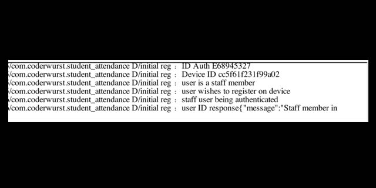
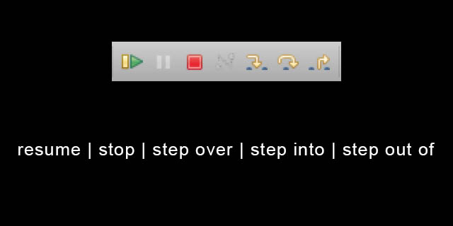
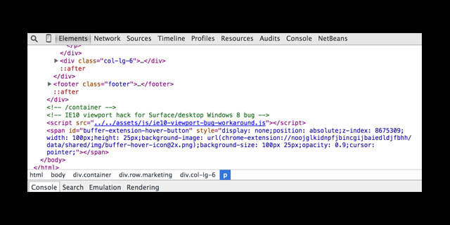
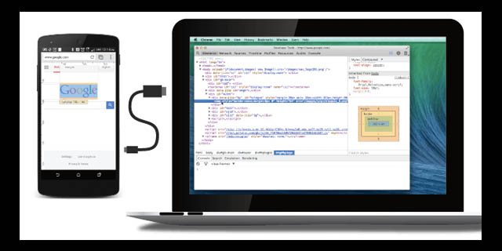

debugging
17th April , 2015 by coderwurst
"the most useful tool for a developer and they didn't
teach at University, sometimes your on your own"
System Out Statements
The most basic and only thing they did teach at my University
is how to use System out statements to show the values of data
values. This is the most basic type of debugging, but is not to be
ignored. In the early stages of learning how to code, printing
out as much information as possible as your program steps through
it's methods not only makes it easier to identify mistakes quickly,
but also helps you to understand if and how your code is working.

IDE Debugger
Most IDE debuggers consist of 2 core element - the breakpoint and the
debugging interface. With IntelliJ the interface pops up in a window
at the bottom of your workspace when you choose to start the program
in debug mode. With Eclipse a new perspective opens. Both function more
or less in the same way, though it may take you a while to get your head
around the different interfaces.
Debugger tools:
- place a breakline (or breaklines) at any line in the code that
you want to test. You can do this by double clicking to the left of you
line of code, where the line numbers are usually shown. Note that
when the debugger stops on that line,
it will require another step for the variables to be filled with data.
Imagine that the debugger has landed on your line before anything has
been processed in the program. There are 3 main options at this stage -
step over, step into and, if you are already in a method by this stage, step out of.
These can all be found in the debugger interface, similar icons but different
locations for each IDE!
- step over will allow the developer to go through each line of code, one at a time,
and provide attributes and values for variables in the program at each
stage. If you pause a program, variable values will also be shown in a
summary table or by simply hovering over the variable in your code.
- step into is slightly different as it will take
the developer into the method currently being called. If you are
working on a large code base it may be hard to tell how far down
in the source code your variable, object or method is being passed. Try to
find a call that uses your object, then using this debug function it is
possible to step into that call and follow it through the program. Once you
have stepped into a method, it is possible to use step over to stay in this
method and continue as before.
- step out can be used to move back up and out of
any method which you have stepped into. If you step into a method
and discover that it isn't what you thought it was, instead of having
to restart the debug from scratch it may be possible to step out and
back into the level you were debugging previously.
- continue is usually symbolised with a pause and play arrow,
will allow the program to function again as normally, until another breakpoint
is hit or the program finishes.
- pause can temporarily suspend the program and
give a summary of the variables in use and their current values.

This graphic shows the main tool buttons highlighted and their
functions below. Best check out your IDE documentation to discover
the wide range of other tools available and what they do.
Web Debugger
At the minute I do all of my web debugging on Chrome. Chrome is
simple to use and a dev lead on our project team has created a number
of add-ons that make it do everything I need it to whilst working
on the project. I am also look at the new developer edition by
Firefox - but haven't been able to get as comfortable with it as I am
with Chrome, it seems to be getting very good feedback online from
devs who previously worked with the normal Firefox debugger tool.

The Chrome debugger interface, seen above, gives you all the views
you need to debug Javascript and sometimes HTML coding errors.
- elements - use the magnifying glass to hover over and select
any page element to show the code & style attributes assigned to
the element. In Chrome it is possible to edit and save these
attributes temporarily, in order to test a new size, etc.
- network - allows the developer to view
what is being passed between the site and the server. Useful when
working with databases, etc to view the calls being made, how much
time they take and what the response is.
- sources - shows the source files for the
website. Again attributes within the source code can be edited and
saved here to be immediately tested on the page. This source code
is particularly useful when working on larger projects with a lot
of JavaScript - errors shown in the console can be identified and
a solution tested in Chrome, before heading back into the original
code and making the update.
- console- the console will show any system output
statements, including errors, at runtime. If you see any red dots
with a white x through it (5 in the example) then the console is
the first place to look. Although the line number and error message
cannot always be trusted to be the root problem of the cause, it
will generally start you on the right path.
I have skipped over the profiles, resources or audit tabs as I have
had little experience with them so far. When I do, I will update
this post to include them!
If you have tried with the debugger and still can't get to the
source of the problem, another option is to use alert statements
in JavaScript. These can be placed wherever you want in the code. If
the alert statement fires, you know that the program is getting
to that point in the code. You can also include in the alert message
a value from the code - similar to the System.out.println statements
in Java!
Device Debugger
Responsive design demands that an application work on devices of
all sizes. It is important to appreciate that applications that work
on a computer screen, may behave quite differently on a mobile device.
I have experienced a few JavaScript problems brought about by the differences
between iOS and Android. These errors will only show when running on
a device. I am not a big fan of emulators - they are handy than getting
out an actual device, but they too have shown inconsistency with how
they react to certain events and that of a tablet.
To debug on a tablet, Chrome provides a remote debugging tool. With
the installation of a driver for the device, and hitting the site
chrome://inspect/#devices, it is possible to have the same functionality
explained with the Web debugger. Simply plug the tablet, phone or watch
into your PC and connect.

source image and more information can be
found on the
Developer Docs